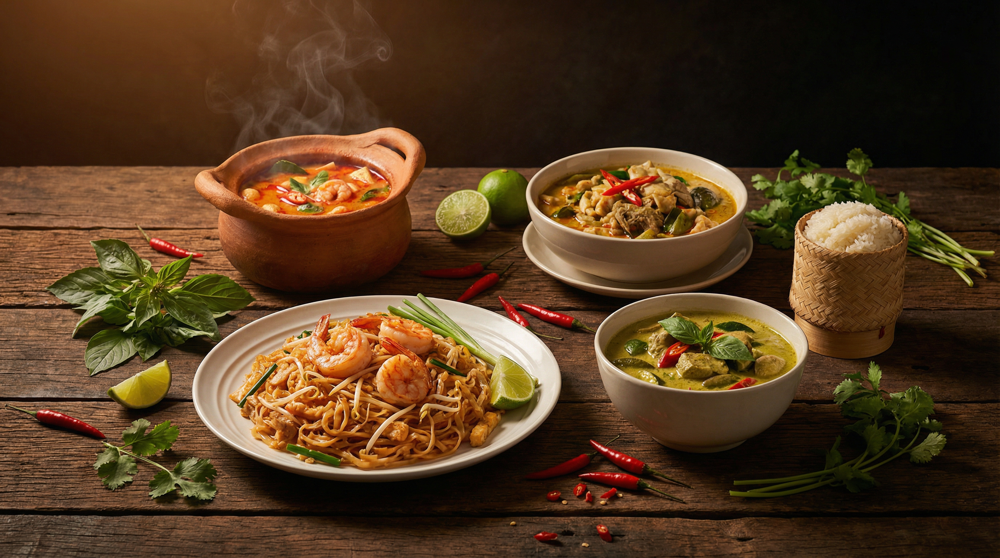
A Culinary Journey
อาหารไทย 4 ภาค
สำรวจความอร่อยและเอกลักษณ์ของอาหารไทยจากทั้ง 4 ภูมิภาค ตั้งแต่รสชาติเข้มข้นของภาคเหนือ ความแซ่บนัวของอีสาน ความกลมกล่อมของภาคกลาง ไปจนถึงความจัดจ้านของภาคใต้
THAI CUISINE • 4 REGIONS
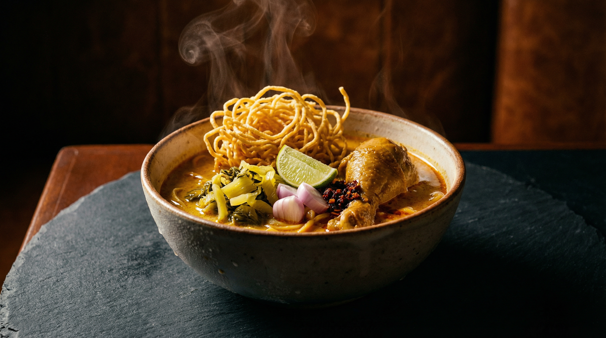
Northern Thailand
"ลำขะหนาด"
อาหารเหนือมีรสชาติเข้มข้น หอมกลิ่นสมุนไพร ได้รับอิทธิพลจากวัฒนธรรมล้านนาและประเทศเพื่อนบ้าน นิยมกินกับข้าวเหนียวและผักพื้นบ้าน
Signature Dishes
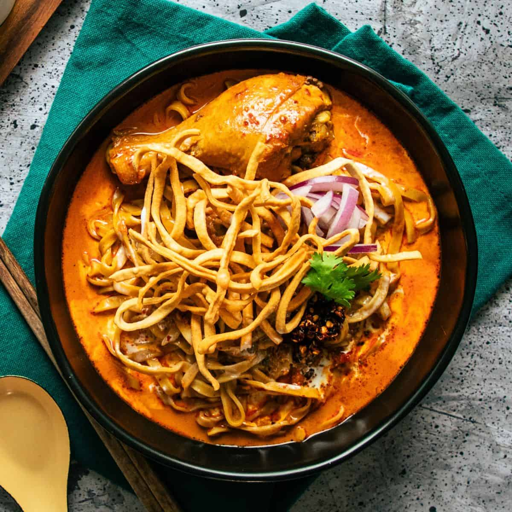
Khao Soi Kai
ก๋วยเตี๋ยวในน้ำแกงกะทิสีเหลืองทอง รสชาติกลมกล่อมจากเครื่องแกงพื้นเมือง เสิร์ฟพร้อมเส้นทอดกรอบ หอมหัวใหญ่ดอง และมะนาว เป็นอาหารที่ได้รับอิทธิพลจากวัฒนธรรมไทใหญ่
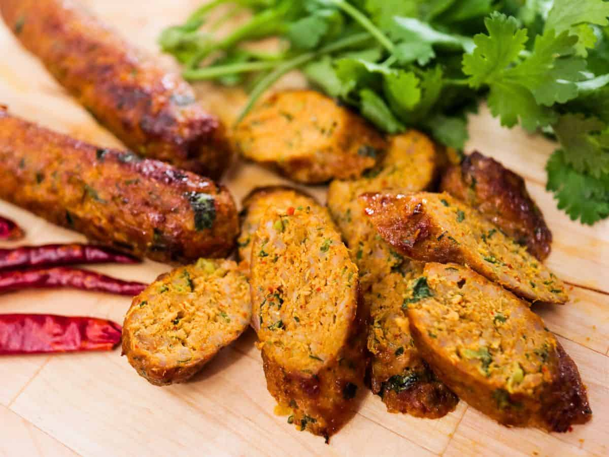
Sai Oua Sausage
ไส้กรอกหมูสมุนไพรพื้นเมืองภาคเหนือ ปรุงรสด้วยตะไคร้ ใบมะกรูด พริกแห้ง และเครื่องเทศหอมกรุ่น ย่างจนหอมกรอบ เสิร์ฟคู่กับผักสดและข้าวเหนียว
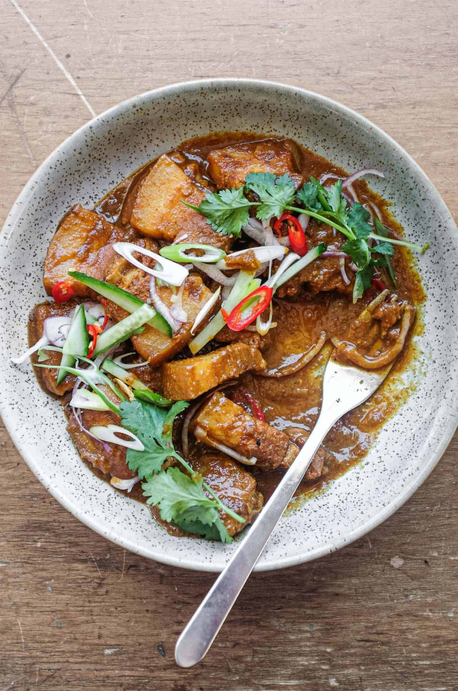
Kaeng Hang Le
แกงหมูสไตล์พม่าที่ได้รับความนิยมในภาคเหนือ รสชาติเข้มข้นจากขิง ขมิ้น และเครื่องเทศ หมูเปื่อยนุ่มในน้ำแกงข้นหอมกรุ่น เป็นอาหารมงคลในงานเทศกาล
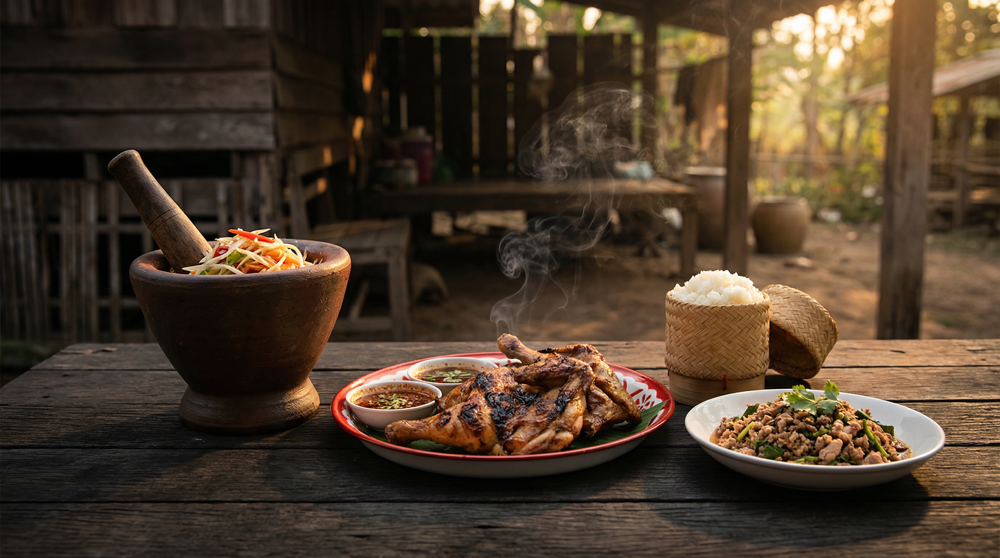
Isan - Northeastern Thailand
"เผ็ดอีหลี"
อาหารอีสานโดดเด่นด้วยรสแซ่บ เผ็ด เค็ม เปรี้ยว ใช้วัตถุดิบพื้นบ้านอย่างปลาร้า ข้าวคั่ว และสมุนไพรสด เป็นอาหารที่เรียบง่ายแต่รสชาติจัดจ้าน
Signature Dishes
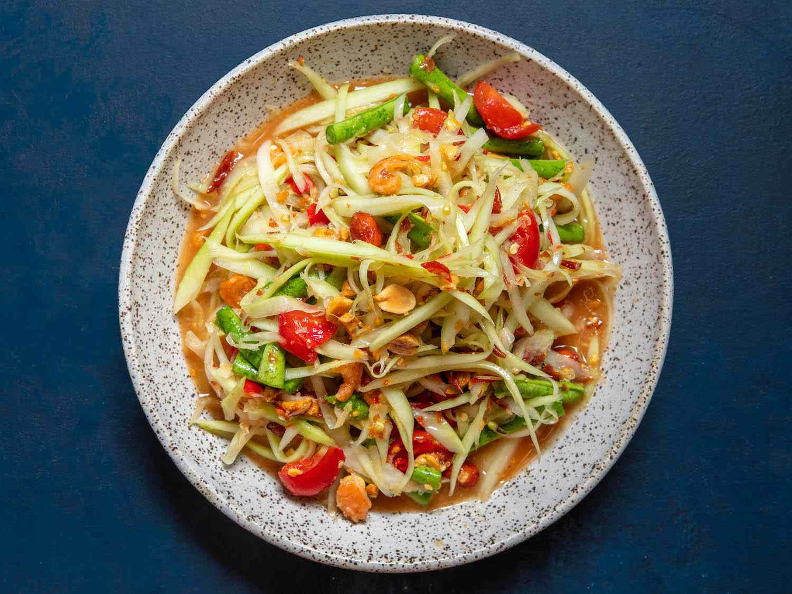
Som Tam Papaya Salad
ตำมะละกอดิบรสจัดจ้าน ผสมผสานรสเปรี้ยว เค็ม หวาน เผ็ด ได้อย่างลงตัว ใส่มะเขือเทศ ถั่วฝักยาว กุ้งแห้ง ถั่วลิสง ปรุงสดใหม่ในครกดินเผา
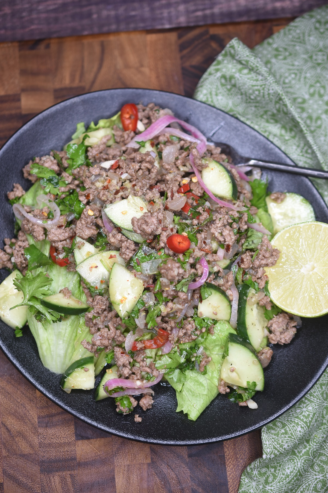
Pork Larb
สลัดเนื้อหมูสับรสแซ่บ ปรุงด้วยน้ำปลา มะนาว พริกป่น ข้าวคั่ว และสมุนไพรสด หอมกลิ่นใบสะระแหน่ ต้นหอม ผักชี เสิร์ฟคู่ผักสดและข้าวเหนียว
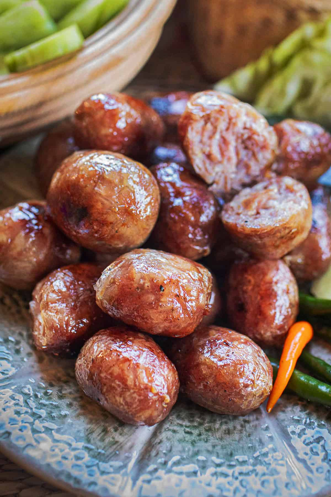
Sai Krok Isan
ไส้กรอกหมักเปรี้ยวสไตล์อีสาน ทำจากหมูสับผสมข้าวสุก หมักจนได้รสเปรี้ยวนิดๆ ย่างจนหอมกรอบ กินคู่กับขิงสด พริกสด และกระเทียม
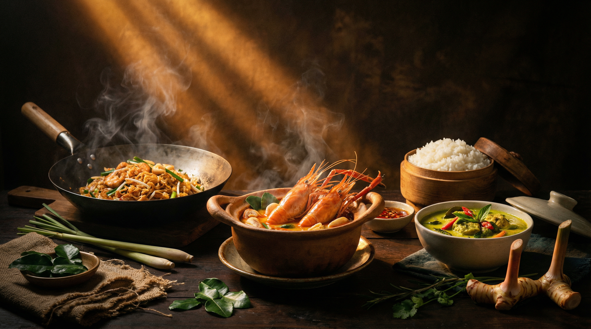
Central Thailand
"น่าอร่อยจัง"
อาหารภาคกลางมีรสชาติกลมกล่อม ผสมผสานรสหวาน เค็ม เปรี้ยว เผ็ด อย่างลงตัว เป็นต้นแบบอาหารไทยที่โด่งดังไปทั่วโลก
Signature Dishes
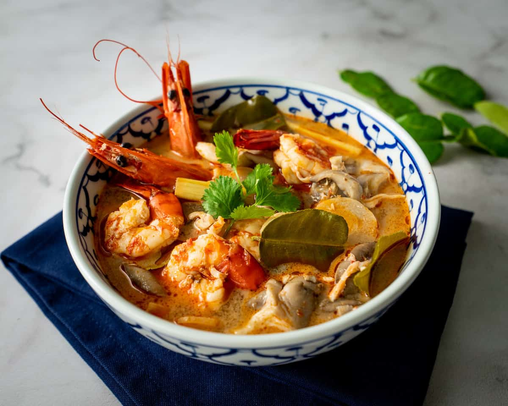
Tom Yum Kung
ต้มยำกุ้งน้ำข้นสูตรดั้งเดิม รสเปรี้ยวเผ็ดจัดจ้าน หอมกลิ่นตะไคร้ ใบมะกรูด ข่า พริกขี้หนู กุ้งแม่น้ำตัวโตสดใหม่ เป็นอาหารไทยที่โด่งดังไปทั่วโลก
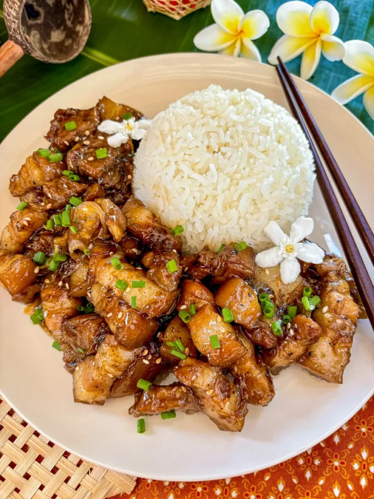
Thai Sweet Pork
หมูสามชั้นเคี่ยวในน้ำตาลปี๊บจนเข้าเนื้อ รสหวานนำ เค็มตาม หอมกลิ่นพริกไทย เนื้อหมูนุ่มเปื่อย เสิร์ฟคู่ข้าวสวยร้อนๆ เป็นอาหารบ้านสไตล์ไทยแท้
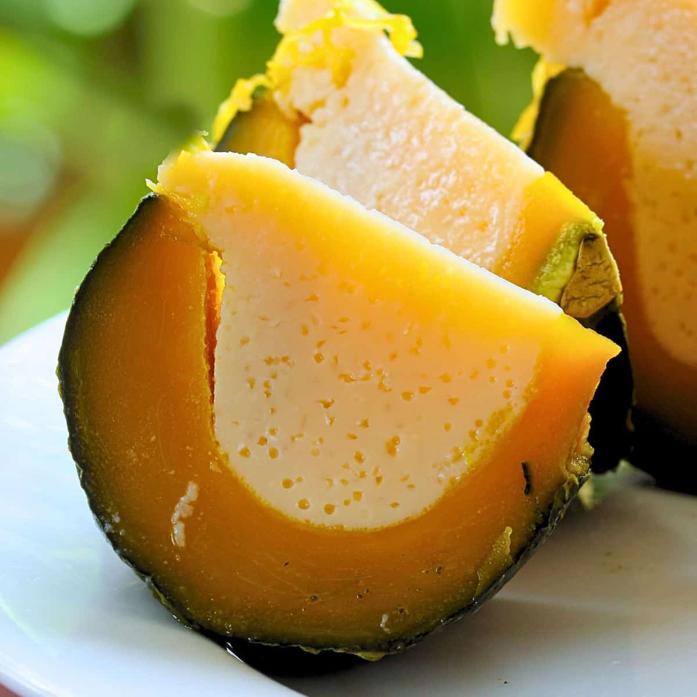
Egg Custard in Pumpkin
ขนมหวานไทยโบราณ ไข่ผสมกะทิและน้ำตาลปี๊บนึ่งในฟักทองทั้งลูก รสหวานมัน เนื้อเนียนนุ่ม หอมกลิ่นใบเตย เป็นของหวานในงานมงคล
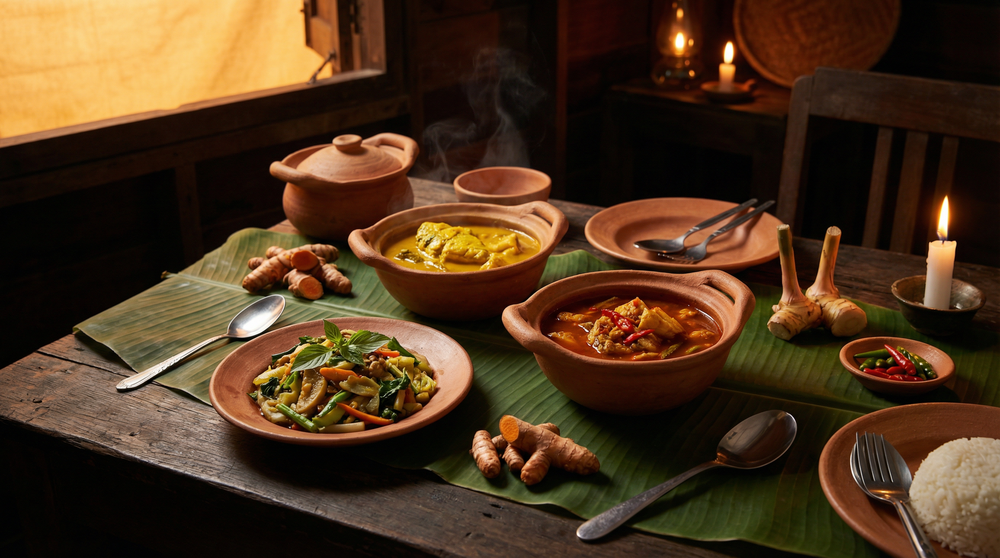
Southern Thailand
"หรอยจังฮู้"
อาหารใต้ขึ้นชื่อเรื่องความเผ็ดร้อนจัดจ้าน ใช้เครื่องเทศและสมุนไพรหลากหลาย ได้รับอิทธิพลจากวัฒนธรรมมลายูและอินเดีย
Signature Dishes
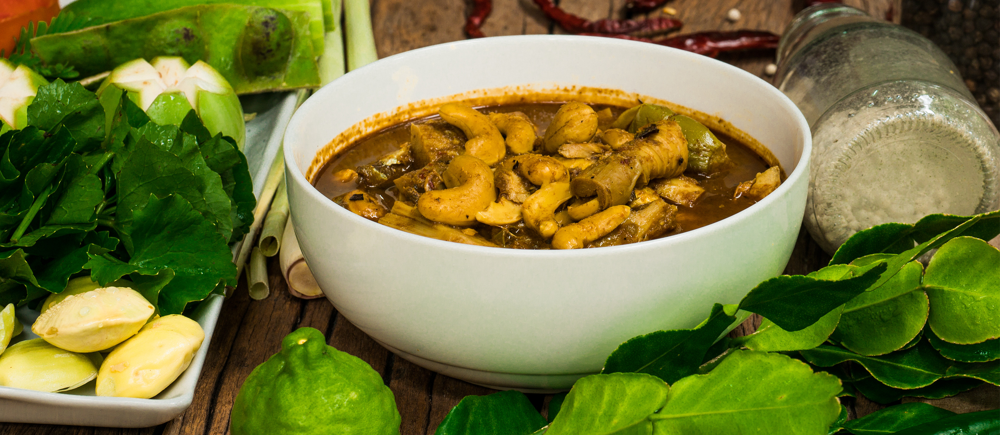
Kaeng Tai Pla
แกงรสจัดจ้านของภาคใต้ ปรุงจากไตปลาหมักที่ให้รสเค็มเข้มข้น ใส่หน่อไม้ ถั่วฝักยาว มะเขือ เผ็ดร้อนถึงใจ เป็นอาหารพื้นบ้านที่มีเอกลักษณ์เฉพาะตัว
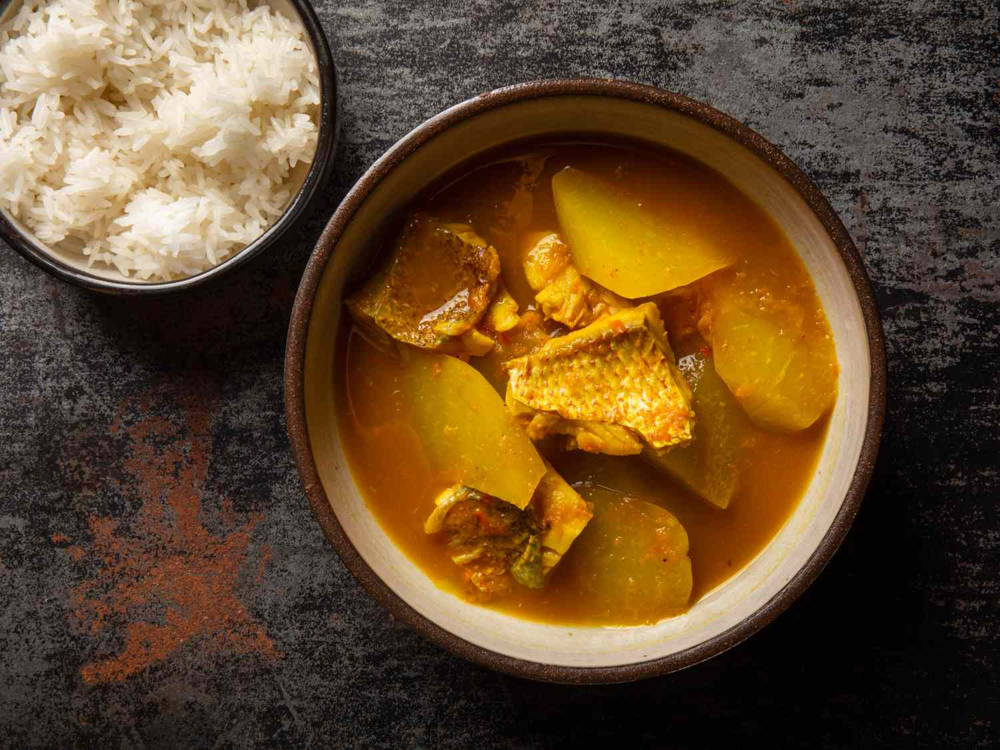
Gaeng Som Sour Curry
แกงส้มปักษ์ใต้รสเปรี้ยวนำ เผ็ดตาม น้ำแกงใสสีส้มสดจากขมิ้น ใส่ผักพื้นบ้านและปลาสด รสชาติสดชื่น กินคู่ข้าวสวยร้อนๆ ช่วยเจริญอาหาร
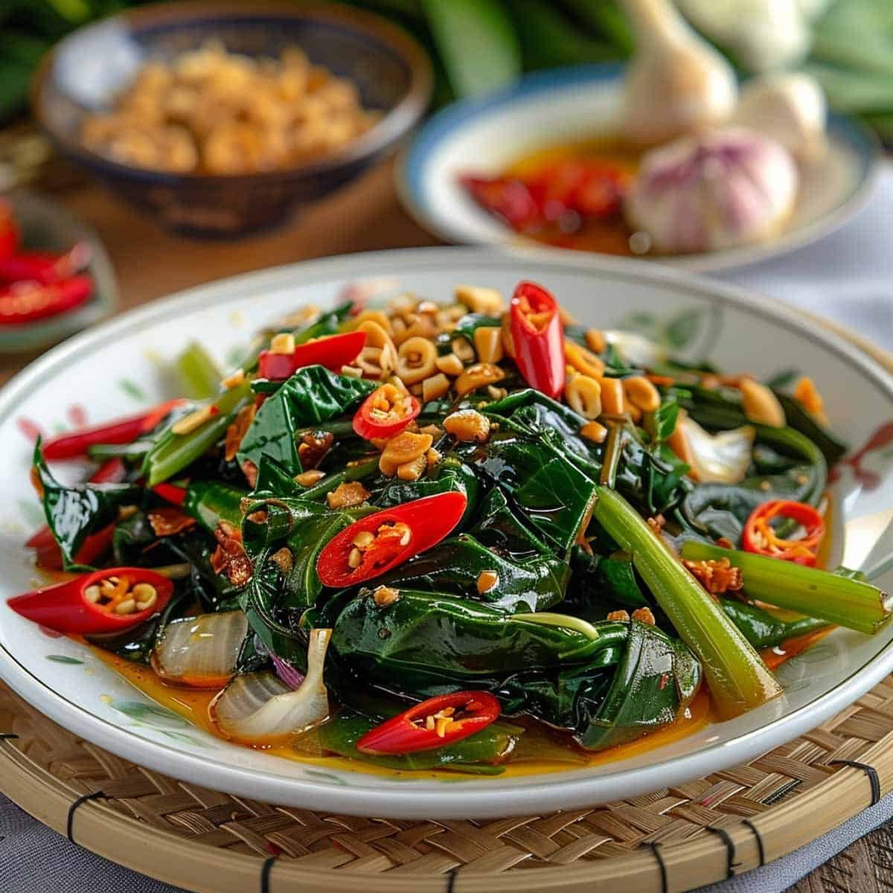
Stir-fried Melinjo Leaves
ผักพื้นบ้านภาคใต้ผัดกับไข่ รสชาติเรียบง่ายแต่อร่อย ใบเลียงมีรสขมนิดๆ ผัดกับกระเทียมและน้ำปลา เป็นอาหารสุขภาพที่หาทานได้ยาก